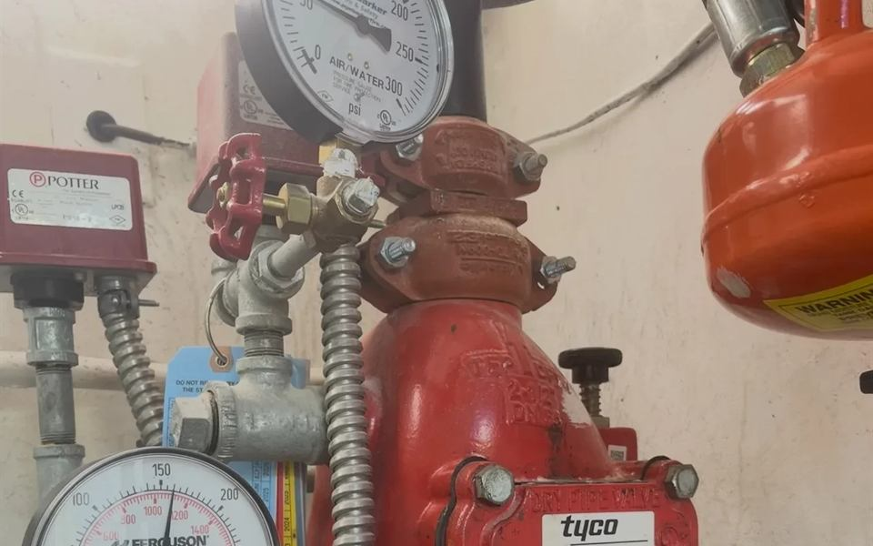
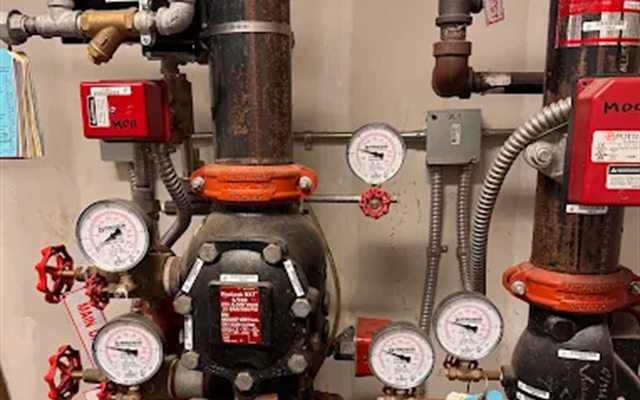
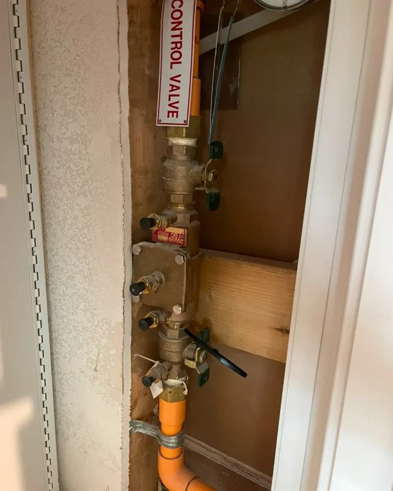

Sprinkler Inspections
Quarterly and annual inspections and tests under NFPA 25, documented in a report you can hand to the fire marshal or your insurance carrier.
Wet and dry pipe systems for commercial buildings and homes in Austin, San Antonio, Houston, and Dallas. Inspected on schedule, repaired by the same crew, and covered 24/7.

Sprinklers sit untouched for years, which is exactly why they need regular inspection. A closed valve, a corroded head, or a dry pipe valve that will not trip can leave a building unprotected without anyone knowing.
We keep commercial and residential systems inspected, tested, and repaired to the schedule your fire marshal and insurance carrier expect. When something needs fixing, the crew that found it is the crew that fixes it.
Every stage of a sprinkler system's life, handled by one company.

Quarterly and annual inspections and tests under NFPA 25, documented in a report you can hand to the fire marshal or your insurance carrier.

Heads, valves, gauges, leaks, and the deficiencies on your last report. We fix what the inspection found and get the system back in compliance.

New systems for commercial construction, tenant finish-outs, and homes, coordinated with your general contractor and your final inspection.

The exact list depends on your system and how often it is due, but a typical inspection includes:
Most commercial sprinkler systems need a full inspection at least once a year under NFPA 25, with some components checked quarterly and others tested on longer cycles, like the five-year internal pipe assessment. Your local fire marshal enforces the schedule. We can look at your last report and tell you what is due.
Yes. We work on both wet pipe and dry pipe systems. Dry systems, common in parking garages, attics, and other spaces that can freeze, have extra parts like the dry pipe valve and air supply that need their own inspection and maintenance.
We document the deficiency, explain it in plain terms, and quote the repair. Because we do repairs as well as inspections, you do not have to bring in a second company to close it out.
Yes. We install sprinkler systems in commercial buildings and homes, and we work with general contractors on new construction, finish-outs, and remodels.
Yes. Our line is answered 24/7 for emergencies like a broken sprinkler head, a leaking riser, or a system that has been taken out of service. Call (254) 613-4231.
Send us the property address and your last report if you have it. We will tell you what is due and quote the work.